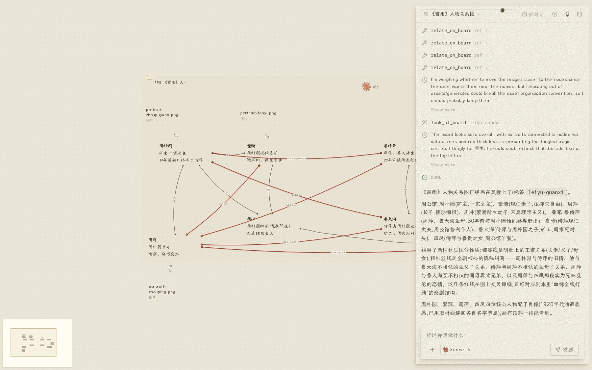

描述需求，Agent 安排步骤、调用工具并检查产物。

每件产物在画布上都有独立位置。用户可以拖动、圈选和排列产物，也可以复用已有内容。图像完成背景移除后可用于页面，Word 文档中的图像可用于演示。
一轮制作结束后，产物继续保留在画布上。
描述需求后，Agent 选择图像生成、背景移除、页面制作或代码执行工具。
工具执行后，Agent 通过截图、文件读取和校验检查结果。发现问题后继续修改。
按描述生成图像，可指定风格。结果直接添加至画布。
生成透明背景图像，可用作版面元素。
生成工作区内的 HTML/CSS 源文件，不依赖预设模板。
完成后截图检查版面，并修正发现的问题。
生成符合中文排版规范的 Word 文档，支持继续编辑。
确定人物与场景后，逐镜生成画面。
按 EDL 排序分镜并导出视频。
演出模式按角色设定生成一致的行为与表达。
选择场景，查看任务步骤和工具组合。
段落位置、字号等视觉问题不必描述坐标。在预览上圈选区域并输入要求，Agent 完成修改。
长期记忆、项目档案和板书共同保存上下文。新会话可继续使用已有信息。Agent 检索用户偏好、项目决策和上轮进度。
站点整站导出 zip，单页导出为自包含 HTML；文档导出 .docx，演示导出 PDF / PPTX。要发布到公网，桌面版与自部署版本配置 Cloudflare 令牌后，可直接发布至自有域名。
交付物为静态文件，不绑定平台，可独立运行。